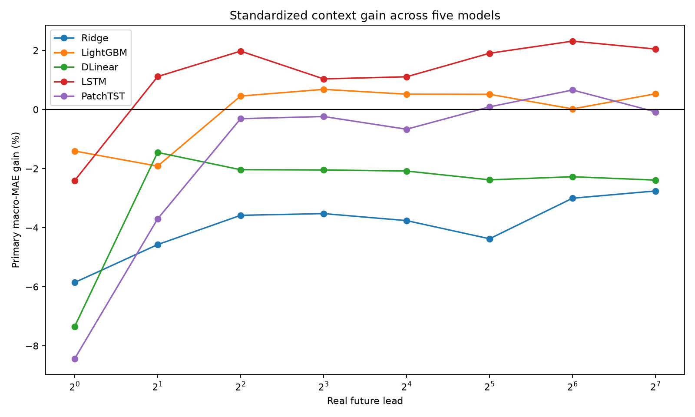
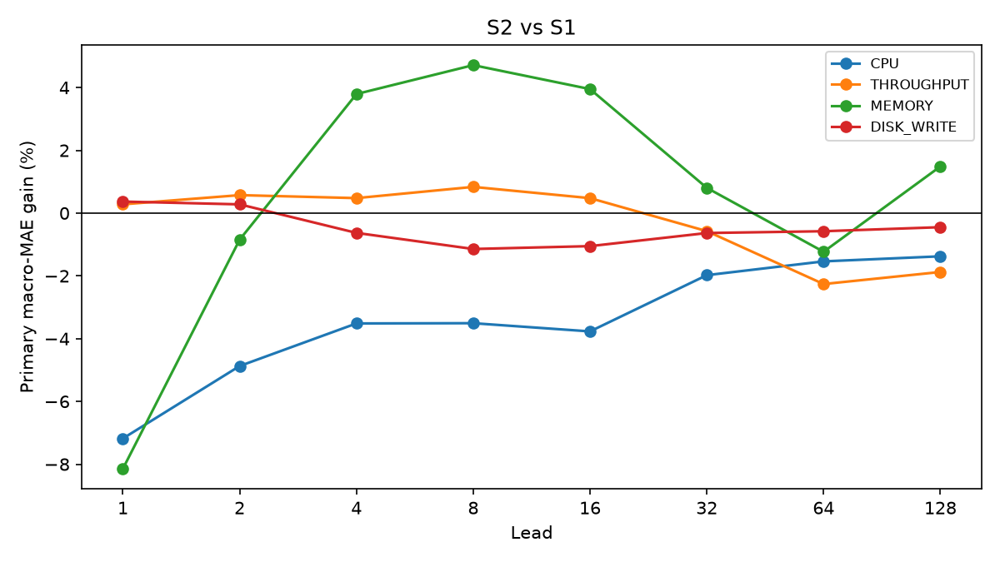

TimeTrack — Multi-Metric Forecasting Framework
Reproducible multi-horizon forecasting and benchmarking for cloud/software telemetry


Overview
TimeTrack is a reproducible forecasting framework for studying whether information from multiple runtime signals improves forecasting of cloud/software telemetry—across CPU, memory, disk, and network-related metrics—not CPU alone.
Built around OpenAirInterface CI/CD telemetry and later external replication studies, the framework compares forecasting methods across targets, forecast horizons, context lengths, feature configurations, and model families under chronological validation and leakage control. Archived rejected material is separated from the active research artifact.
The Problem
Runtime metrics in distributed software systems are related, but adding more signals does not automatically improve forecasts. A useful framework therefore needs to answer which signals help, for which targets, at which horizons, under which models and context lengths, and whether improvements remain robust under chronological testing.
TimeTrack treats that comparison problem as first-class engineering: deterministic protocols, matched supports, purged splits, and structured artifacts—rather than isolated “best model” claims.
What TimeTrack Is
An experimental systems + AI/ML research codebase for multi-metric telemetry forecasting, including:
- Canonical panel construction from multi-file telemetry
- Deterministic CPU benchmarking with classical and neural models
- Neural-v2 evaluation of DLinear, LSTM, and PatchTST against matched baselines
- Multi-resource LSTM factorial experiments (CPU, throughput, memory, disk-write)
- Independent external validation on Bitbrains and Materna corpora
- Frozen manifests, validators, and regenerable scientific reports
Forecasting Scope
Canonical panel
41,356 aligned timestamps · 113 registered signals · seven machines · CPU / memory / disk / network families
Forecast leads
[1, 2, 4, 8, 16, 32, 64, 128] future steps (~0.7–90 minutes at the measured sampling interval)
Context lengths
Candidate histories L ∈ {32, 64, 128} with contiguous, segment-safe windows
Active targets
CPU utilization (primary CPU phase); multi-resource tuple: CPU, log1p throughput, memory used, log1p disk-write
End-to-End Experimental Pipeline
Multi-file host metrics
Exact joins & segments
Frozen feature sets
Chronological folds
Inner selection → refit
Persist predictions
MAE / RMSE / R²
Cross-model / signal
My Contribution
I designed and implemented the TimeTrack forecasting and benchmarking framework as a software-engineered research system:
- Designed and implemented the forecasting framework and experiment protocols
- Built telemetry alignment, segmentation, and canonical-panel construction
- Implemented feature-set construction and matched-support comparison logic
- Implemented chronological expanding folds with lead-128 target-time purge
- Built model training pipelines for classical and neural forecasters
- Orchestrated large-scale deterministic and neural benchmark executions
- Persisted predictions, computed metrics, and produced comparative analyses
- Froze configurations, manifests, validators, and scientific report artifacts
Models & Baselines
Baselines / classical ML
Persistence · Ridge · LightGBM — evaluated in the deterministic Phase 2B-1 benchmark with frozen grids and matched F0 correction.
Neural forecasting
DLinear · LSTM · PatchTST — evaluated in Neural-v2 scientific runs with multi-seed selection and outer-test isolation.
TCN code exists in the framework, but it is not treated as a completed scientific result set on this page. XGBoost / Random Forest appear only in archived old_fgcs_rejected material and are not listed as active TimeTrack benchmark models.
Temporal Validation & Leakage Control
- Chronological expanding outer folds with non-overlapping test blocks
- Inner validation taken from the latest chronological slice of legal training
- Target-time purge at maximum lead 128 so training cannot see future test horizons
- Exact timestamp alignment; no nearest-neighbour interpolation across gaps
- Segment-safe windows that do not cross canonical temporal gaps
- Matched sample-ID supports for contextual vs F0 comparisons
- Train-only scaling / selection; outer test excluded from configuration choice
Experiment Scale
Representative Phase 2B-1 deterministic freeze (protocol-conforming CPU benchmark):
Later neural-v2, multi-resource, and independent-validation phases expand the corpus beyond Phase 2B-1; the cards above are the frozen deterministic scale used as a clear, auditable reference.
Evaluation & Analysis
Core metrics are MAE, RMSE, and R², reported by lead, machine, fold, feature set, and model. Analysis emphasises:
- Horizon-aware comparison across the eight genuine future leads
- Model-family comparison under shared eligibility and purge rules
- Feature-set / context comparisons with matched F0 references
- Cross-signal information-sharing studies (throughput context; multi-resource S1/S2/M1)
- Robustness and failure-boundary analysis (machines, folds, regimes, external corpora)
What the Results Taught Us
- Cross-signal information value is target-, horizon-, and architecture-dependent—not universally helpful
- Same-machine throughput context can help some models modestly (e.g., LSTM overall; LightGBM under cell-relative summaries) while harming others (Ridge, DLinear; often PatchTST)
- Absolute forecast quality remains competitive for strong tabular baselines; LSTM context gains do not imply LSTM beats LightGBM absolute MAE
- Multi-resource input / shared-representation formulations showed weak or harmful aggregate behaviour on TimeTrack and mixed/negative patterns on Materna replications
- Robustness across machines and folds matters more than isolated best-case improvements
Findings are framed as evaluation evidence under frozen protocols—not universal guarantees.
Engineering & Reproducibility
Frozen protocols
Phase manifests, SHA-256 inventories, and prospective decision records before result inspection.
Deterministic orchestration
Drivers, validators, and smoke/preflight gates for deterministic and neural executions.
Persisted artifacts
Predictions, lead-level metrics, summaries, and regenerable scientific figures/reports.
Archive separation
old_fgcs_rejected/ keeps legacy/rejected work out of the active evidence path.
Technologies
Visual Evidence
Figures on this page are copied from active repository scientific outputs:
benchmark/neural_v2/outputs/patchtst/figures/06_five_model_primary_context_gain.pngmultiresource/04_lstm_factorial/outputs/scientific/figures/01_s2_vs_s1_gain_by_resource_lead.png
The homepage card uses the JPEG rendering of the five-model context-gain chart.